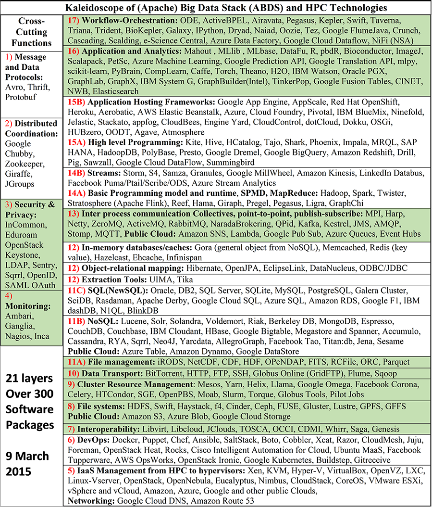
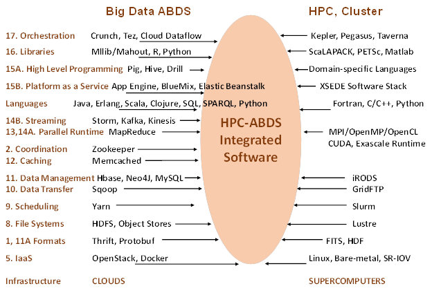

|
|
MIDAS |

|
|
MIDAS Architecture It is our goal to study major software components relevant for Big Data from both HPC and commodity Big Data processing. At 10 zettabytes, the total commodity Big Data is far larger than science data (with LHC analysis at “just” 100 petabytes) and has motivated the development of much high quality software which we collectively term ABDS – Apache Big Data Stack. As HPC has a leadership position in some areas – especially those associated with performance – we suggest a need to merge software systems giving. The result is what we call HPC-ABDS software stack, which currently has over 300 entries arranged into 21 “layers” with those where HPC and ABDS have important integration issues identified. The recent announcements [need a citation] that HPC is essential for deep learning have supported these ideas. Interoperation of cloud, supercomputer, multicore, GPU, and Xeon Phi systems is clearly important.

Identifying HPC-ABDS Software Stack The image below gives a comparison of typical cloud and supercomputer software layered stacks.

HPC-ABDS Further/Ongoing work:
|